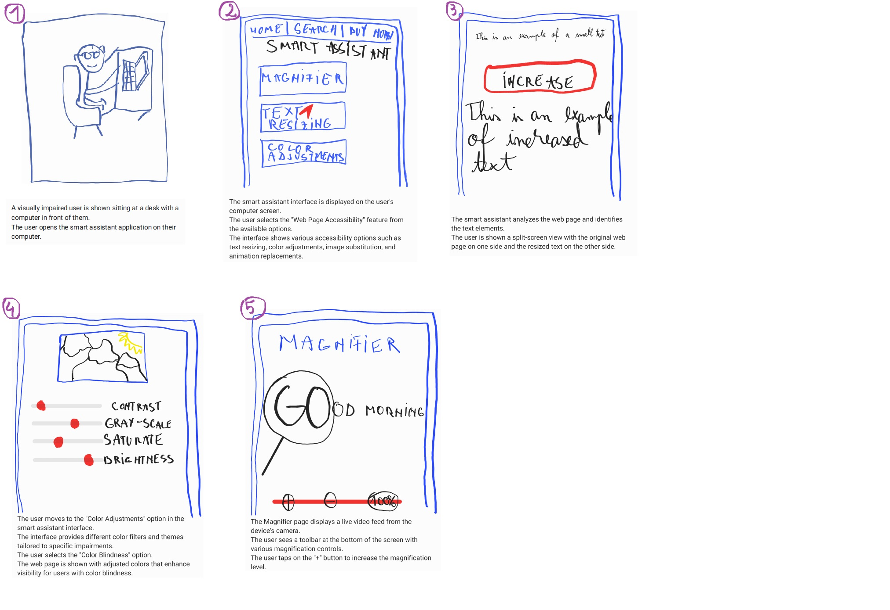
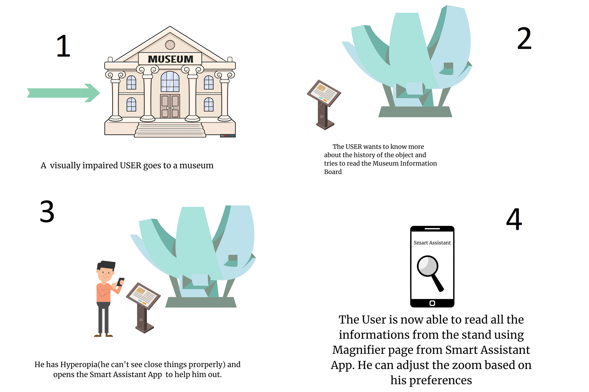

Smart Assistant App for Visual Impairments
Introduction
Smart Assistant App for Visual Impairments. This app is designed to provide assistance and support for individuals with visual impairments, including low vision, myopic vision, color blindness, and light sensitivity. Our aim is to enhance the user experience and accessibility of digital content for these users, making their everyday activities easier and more enjoyable.
Interaction Types/Paradigms
The app utilizes various interaction types and paradigms to cater to the different needs of users with visual impairments. These include:
- Voice commands: Users can interact with the app using their voice, issuing commands and receiving audio feedback.
- Gesture-based navigation: Intuitive gestures can be used for navigation and control, minimizing the reliance on visual cues.
- High contrast mode: The app offers a high contrast mode, making it easier for users with low vision or color blindness to distinguish elements on the screen.
- Text-to-speech: The app includes a built-in text-to-speech feature, which converts text-based content into audible speech, aiding users with visual impairments in consuming information.
Proposed Approach
Our app employs a combination of artificial intelligence and user-friendly design to provide a seamless experience. The app utilizes computer vision algorithms to analyze and interpret images, enabling features like text resizing, magnification, and picture editing. Furthermore, the app is customizable, allowing users to personalize the interface based on their specific needs and preferences.
User Flow
The following user flow demonstrates some key features of the app:
- User opens the app and lands on the home screen.
- User selects a specific piece of text and activates the text resizing feature.
- App presents options to increase or decrease the text size.
- User chooses to magnify an image from the gallery.
- Magnifier tool activates, allowing the user to zoom in on specific details.
- User selects an image for editing.
- Picture editing tools become available, such as adjusting brightness, contrast, and color saturation.
- User saves the edited image or reverts to the original.
This user flow demonstrates a few of the many ways in which our smart assistant app can assist users with visual impairments in their daily activities.
Storyboards/Use-cases
1.Desktop User-Flow Diagrams with Explanation

2.Mobile User-Flow Diagrams with Explanation
